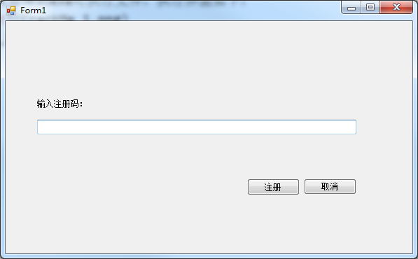
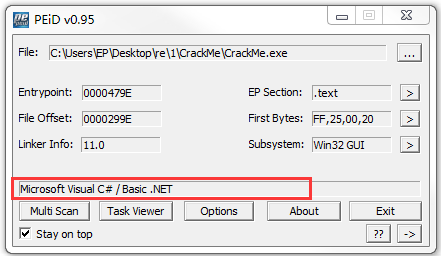
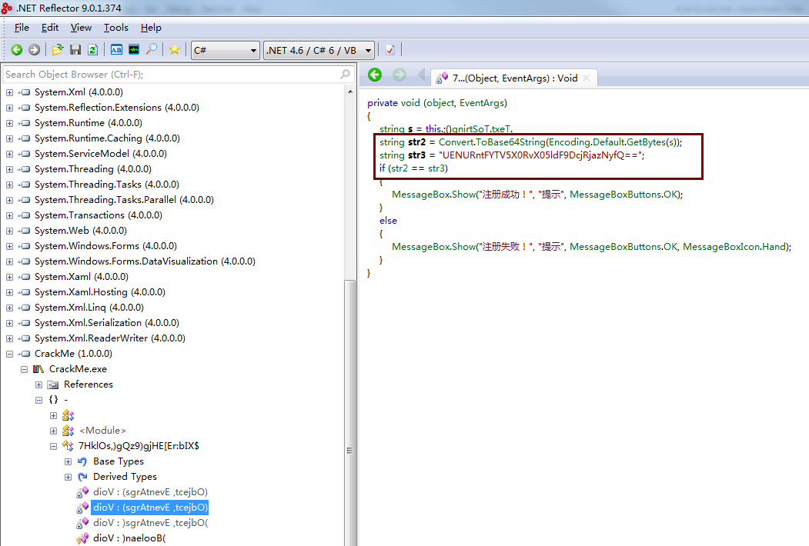

JarvisOJ_CrackMe 发表于 2018-12-17 | 分类于 wrtieup 题目下载后得到exe可执行文件，执行界面如下：FLAG就是注册码，说明需要得到与输入字符串相匹配的正确注册码 使用PEiD工具分析exe文件是否加壳，运行结果如下：说明可执行文件没有被加壳，编程语言是C# 使用.NET Reflector对可执行文件进行分析：注册码使用Base64编码后的结果为:UENURntFYTV5X0RvX05ldF9DcjRjazNyfQ==使用Base64解码后结果为:PCTF{Ea5y_Do_Net_Cr4ck3r}